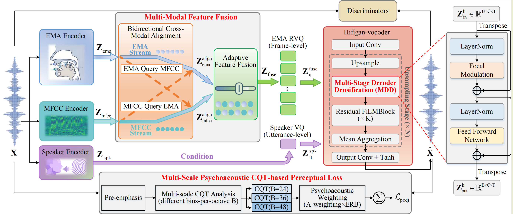

out-of-domain (VCTK) and out-of-domain (ST-CMDS) · No‑quantization / ~1000 bps / ~600 bps / ~300 bps groups
Independent audio players for subjective evaluation. 🔥 Flame marks our proposed M3Codec series.
Recent neural speech codecs have achieved impressive reconstruction quality at moderate bitrates. However, when the bitrate drops below 1 kbps, existing codecs suffer from severe information loss and cumulative distortion, leading to degraded intelligibility and perceptual quality. To address these challenges, we propose M3Codec, a unified framework for ultra‑low‑bitrate speech coding that integrates multi‑modal feature fusion, multi‑stage decoder densification, and multi‑scale perceptual optimization. Specifically, M3Codec incorporates Electromagnetic Articulography (EMA)-based articulatory cues as an auxiliary modality and fuses them with acoustic features at the encoder, introducing physically grounded speech production priors that improve representation robustness and interpretability under extreme compression. At the decoder, we propose a Multi‑stage Decoder Densification (MDD) mechanism implemented via a lightweight Focal Modulation block after each upsampling stage, enabling content‑adaptive refinement and progressive restoration of fine‑grained temporal‑spectral structures. Furthermore, we develop a Multi‑scale Psychoacoustic CQT‑based Perceptual Loss to better preserve harmonic structures and high‑frequency transients by explicitly constraining reconstruction in a perceptually aligned time‑frequency domain. Experiments on both in-domain and out-of-domain benchmarks show that M3Codec achieves statistically significant improvements in PESQ and STOI over all baselines within the corresponding ~600 bps and ~300 bps groups, while attaining MUSHRA scores comparable to those of ~1000 bps reference systems.

| Group | Model | 🎵 wav1 | 🎵 wav2 | 🎵 wav3 | 🎵 wav4 | 🎵 wav5 | 🎵 wav6 | 🎵 wav7 | 🎵 wav8 | 🎵 wav9 | 🎵 wav10 |
|---|